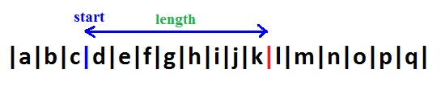

Sự khác biệt giữa Slice, Substring và Substr trong Javascript là gì?
Hàm substr() và substring(), slice() cắt chuỗi trong Javascript
Hàm substr() và substring(), slice() đều là hàm cắt chuỗi trong Javascript. Nhưng mỗi hàm lại có công dụng và hành vi riêng của nó, những bạn mới tìm hiểu Javascript rễ hiểu lầm 2 hàm substr() và substring() giống nhau. Dưới đây là công dụng và cách sử dụng từng hàm.
1. Hàm substr()
Cấu trúc: string.substr([, length]);
- start: vị trí bắt đầu
- length: là độ dài chuỗi con cần lấy tính từ vị trí bắt đầu

VÍ DỤ 1:
var str="abcdefghijklmnopq";
document.write(str.substr(0,3)); //Từ đầu chuỗi lấy thêm 3 ký tự. Kết quả: "abc"
document.write(str.substr(3,5)); //Từ vị trí thứ 3 lấy thêm 5 ký tự. Kết quả: "defgh"
- Nếu vị trí bắt đầu là số âm, hàm sẽ đếm ngược từ cuối chuỗi.
VÍ DỤ 2:
var str="abcdefghijklmnopq";
document.write(str.substr(-10,4)); //từ vị trí thứ 10 tính từ cuối chuỗi lấy thêm 4 ký tự.
Kết quả: "hijk"
- Nếu độ dài (length) bằng 0 sẽ trả về 1 sâu rỗng
- Nếu độ dài là giá trị âm sẽ được tính như là 0
- Nếu khuyết độ dài (length) hàm sẽ trả về chuỗi con được tính từ vị trí bắt đầu đến cuối chuỗi..
VÍ DỤ 3:
var str="abcdefghijklmnopq";
document.write(str.substr(3)); //Tính từ vị trí thứ 3 đến cuối chuỗi.
Kết quả: "defghijklmnopq"
document.write(str.substr(-5)); //Tính từ vị trí thứ 5 (đếm từ cuối chuỗi) đến cuối chuỗi.
Kết quả: "mnopq"
2. Hàm substring()
Cấu trúc: string.substring(start[, stop]);
- strart: vị trí bắt đầu
- stop: vị trí kết thúc

VÍ DỤ 1:
var str="abcdefghijklmnopq";
document.write(str.substring(0,3)); //Lấy từ đầu chuỗi đến vị trí tứ 3.
Kết quả: "abc"
document.write(str.substring(3,8)); //Lấy từ vị trí thứ 3 đến vị trí thứ 8.
Kết quả: "defgh"
- Nếu start bằng stop nó sẽ trả về chuỗi rỗng.
- Nếu 1 trong 2 giá trị (start, stop) âm (nhỏ hơn 0) nó sẽ được xử lý như là 0
- Nếu start > stop nó sẽ đổi vị trí 2 đối số.
- Nếu 1 trong 2 giá trị (start, stop) lớn hơn chiều dài của chuỗi sẽ được xử lý bằng độ dài của chuỗi.
(Nó cũng giống như bị khuyết giá trị đó)
- Nếu bỏ qua stop (khuyết stop) sẽ lấy từ vị trí bắt đầu đến cuối chuỗi.
(điều này giống với hàm substr())
3. Hàm slice(): hoạt động như subtring() nhưng có một số hành vi khác nhau.
Cấu trúc: string.slice(start[, stop]);
- Nếu giá trị kết thúc (stop) được bỏ qua cũng như hàm substring() sẽ tính từ vị trí bắt đầu đến cuối chuỗi.
- Nếu start > stop, slice() sẽ không trao đổi 2 đối số. (Được con là điều kiện sai, trả về chuỗi rỗng)
- Nếu start là số âm , slice() sẽ thiết vị trí đếm từ cuối chuỗi, giống như substr().
Trong trường hợp đếm từ cuối chuỗi nhưng vị trí bắt đầu vẫn vượt vị trí kết thúc trong chuỗi nó sẽ giống như trường hợp start > stop.
VÍ DỤ 1:
var str="abcdefghijklmnopq";
document.write(str.slice(-10,8)); Tính từ vị trí thứ 10 đếm ngược từ cuối chuỗi đến vị trí thứ 8 đếm từ đầu chuỗi.
Kết quả: "h"
- Nếu stop là âm, thì vị trí kết thúc cũng sẽ được tính từ cuối chuỗi đếm ngược lại.
var str="abcdefghijklmnopq";
document.write(str.slice(-10,-7)); Tính từ vị trí thứ 10 đếm ngược từ cuối chuỗi đến vị trí thứ 8 đếm ngược từ cuối chuỗi.
Kết quả: "hij"
*Chú ý khi sử dụng slice() bạn có thể cho giá trị dương hoặc âm (tức là đếm từ đầu hoặc cuối chuỗi) nhưng vị trí bắt đầu không được vượt quá vị trí kết thúc, nếu không sẽ được coi là sai.

Powered by LyNH